Business consulting
Review operations, identify bottlenecks and shape practical improvement plans around your goals.
We connect business advice, practical training and intelligent software to help people and organizations move forward. Choose a solution built around you, or a ready-made product that can grow with your business.
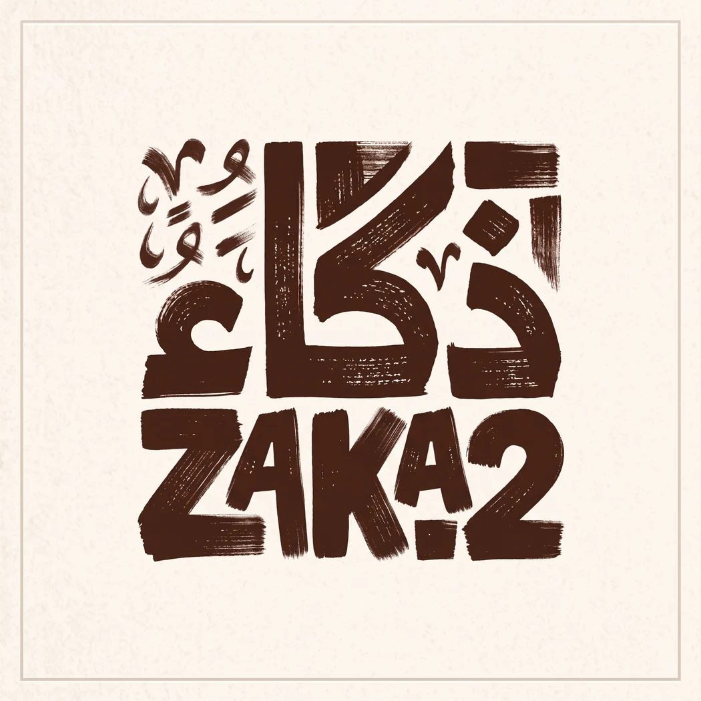
Growing businesses don't need another dashboard to babysit. They need their systems to talk, their repetitive work to disappear, and their information to become useful. ZAKAA designs the intelligence layer that makes it happen, shaped around your people and processes.
ZAKAA brings together business consulting, training and software development. We help organizations strengthen their operations and resilience, enable people to use AI effectively, and build technology around real needs.
ZAKAA was founded with a clear vision: to empower organizations and companies through comprehensive digital transformation, delivering integrated technology solutions that combine efficient software architecture with precise analytics and innovative intelligence — ensuring our clients achieve the highest levels of efficiency and competitive excellence.
To be the trusted, leading technology partner delivering software solutions and AI applications that advance business paths and make a real difference in information infrastructure and systems.
To bridge the gap between advanced technologies and real market needs through custom, creative, and simplified software systems and applications that empower organizations and individuals to lead their digital future with confidence and intelligence.
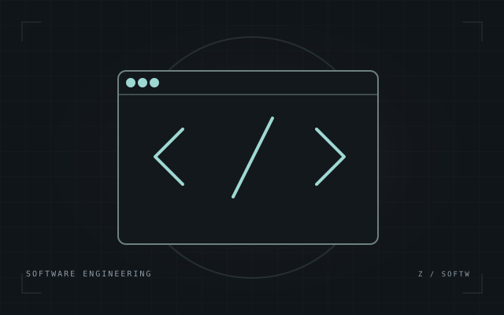
01Smart, custom software solutions and web applications tailored to the nature and scale of every project.
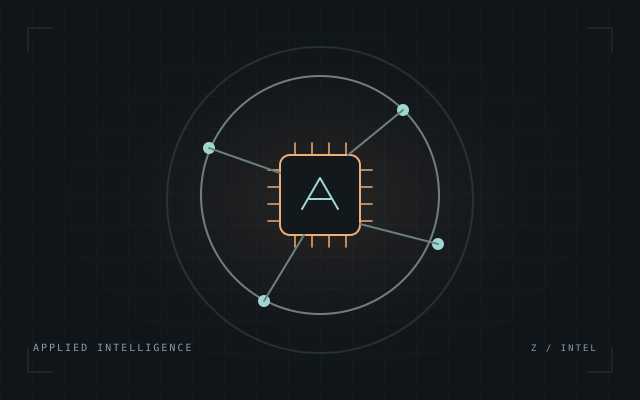
02Integrating modern AI technologies into work environments to automate tasks, raise productivity, and support decision-making.
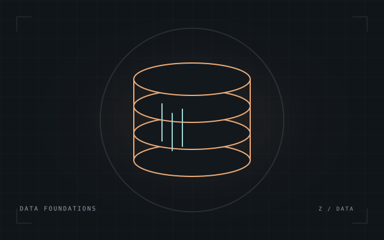
03Building, structuring, and managing databases and information systems for flexible data flow, fast retrieval, and top security standards.
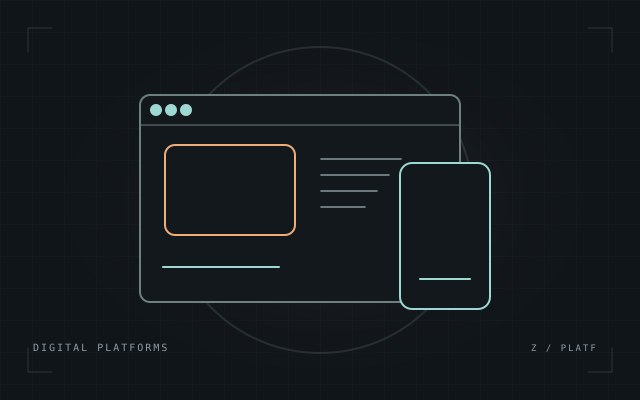
04Crafting interfaces and websites with a seamless, modern user experience that reflects each client's identity and value — as reflected in our own digital platform.
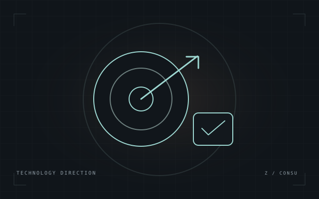
05Business improvement, crisis management and business continuity, alongside digital transformation, software infrastructure and data governance.
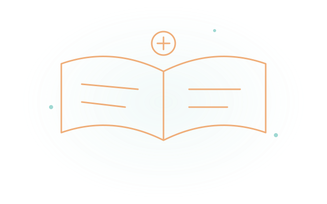
06AI, AI enablement, programming, soft skills, crisis management and business continuity. Learning paths for children, youth, managers and executives.
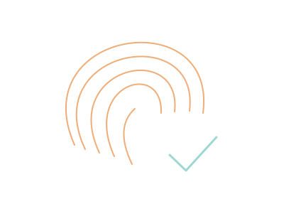
No off-the-shelf ideas. We always start with a precise understanding of the client's problems and needs to build the most fitting solution.
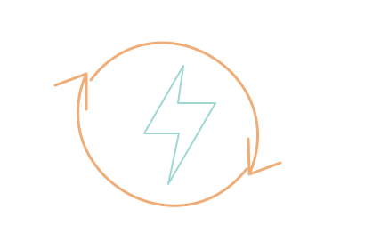
Modern working methodologies that let us execute and deliver projects with high efficiency, in the shortest time.
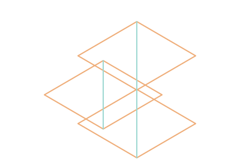
AI woven into the software as an intrinsic part, not a cosmetic add-on — giving your product a lasting competitive edge.
Advice that connects business priorities with practical action.
Review operations, identify bottlenecks and shape practical improvement plans around your goals.
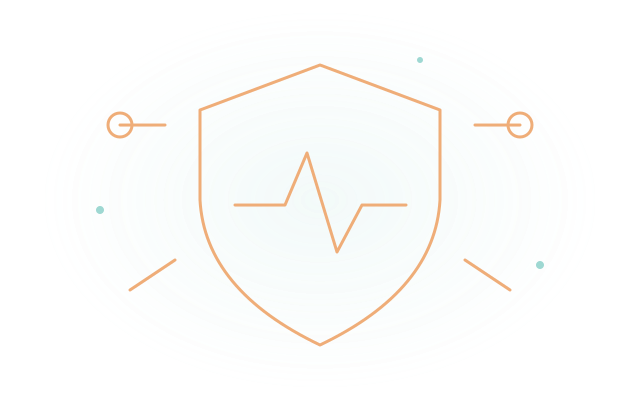
Prepare response scenarios, clarify responsibilities and strengthen decision-making and communication under pressure.
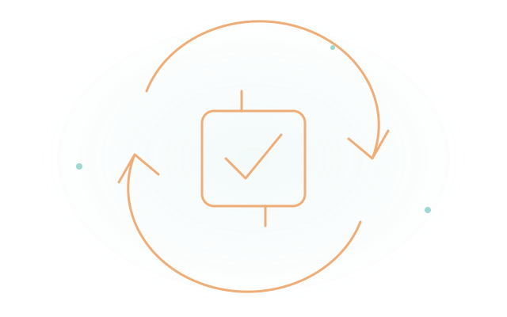
Identify critical activities and dependencies, plan for disruption and develop recovery priorities and exercises.
Practical learning adapted to age, role and experience—not one programme for everyone.
Age-appropriate AI literacy, programming and creative projects, with communication, teamwork and problem-solving skills.
AI enablement for everyday work, programming and soft skills, alongside business continuity and crisis-management training.
AI adoption and enablement, leadership, communication and decision-making, with crisis scenarios and continuity exercises.
Two distinct routes: custom solutions designed around your requirements, and ready-made products configured for your business.
Designed from your requirements: workflows, integrations, features and user experience shaped around your business.
02 / READY-MADEStart with ERP360 or WorkTracker. Discuss configuration, implementation and any additional requirements with us.
Connect scattered tools and remove repetitive handoffs so your team can focus on work that moves the business forward.
Build smarter support journeys that help customers faster and give your team the context to handle what matters.
Turn fragmented operational data into a clearer view of performance, opportunities, and what needs attention.
Use your available data to explore what may come next, with practical forecasts designed to support better planning.
Two ready-made products, with implementation scoped around your needs.
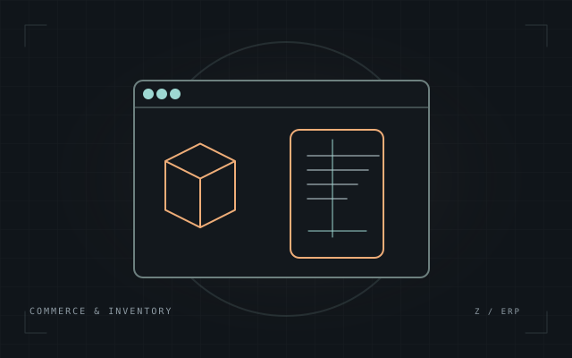
An integrated POS and ERP suite connecting sales, purchasing, inventory, accounting and customer relationships.
Built to evolve: modules can be customized to your needs. We can also develop and add new modules, even if they are not currently included.
Discuss ERP360 ↗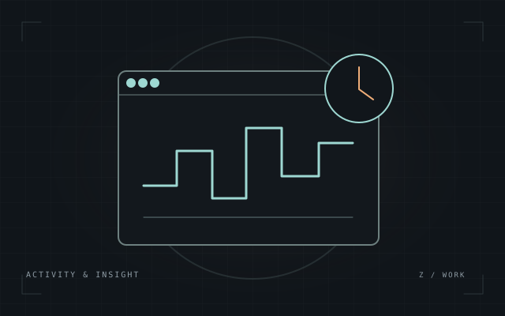
Workforce analytics connecting a Windows activity agent with an administration dashboard to understand application usage and work patterns and manage devices and access roles.
Discuss WorkTracker ↗A portfolio of software projects, tools and digital experiences that demonstrates our capabilities. These entries are examples of our work, not a catalogue of products for resale.
Conceptual illustrations, not screenshots. Project maturity varies. For ready-made products, explore ERP360 and WorkTracker in the dedicated products section.
Not a replacement for your team. An extension of what they can do. We connect the information, tools, and decisions already inside your business, then build the right intelligence around them.
See our approachNo one-size-fits-all platform. A focused path from business challenge to a solution built for your reality.
We map the work, the bottlenecks, and the outcomes worth improving.
We shape a practical AI solution around your existing people, data, and tools.
We implement, validate with real workflows, and refine based on what works.
Explore selected work in the portfolio. We do not present unverified client results as case studies.
The best example could be the one we build together.
No invented metrics. No off-the-shelf demos presented as client work.Both. We build tailored solutions and offer ERP360 and WorkTracker as ready-made products. ERP360 modules can be customized to your needs, and new modules can be developed even if they are not currently included. Our portfolio showcases experience; it is not a resale catalogue.
Not necessarily. We start by understanding what you already use and where integration or improvement makes the most sense.
Start with a process that consumes time, creates delays, or hides useful information. A consultation helps identify a practical first use case.
Not before reviewing your processes and data. We agree on measurable goals and validate results against your real operating conditions.
Tell us what you want to improve: your business, your team’s skills or your software. We will help you define the next step.